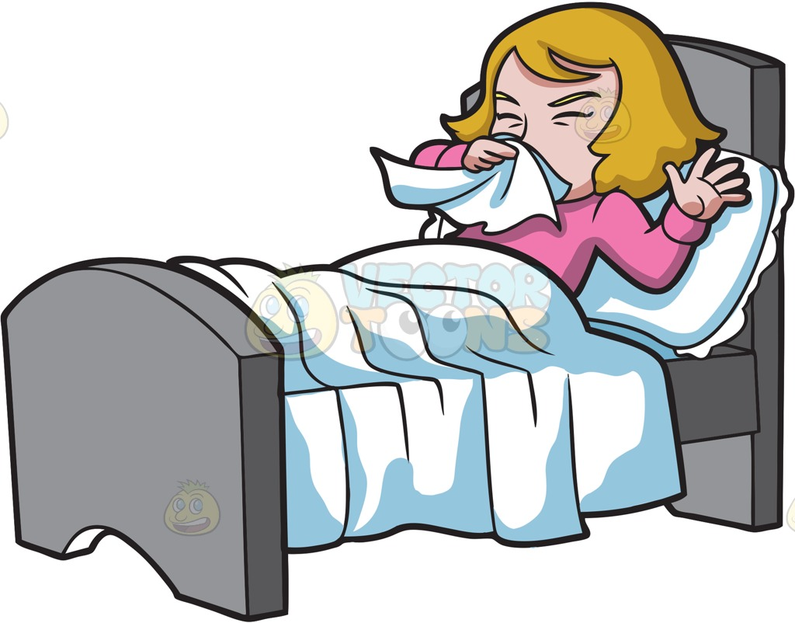
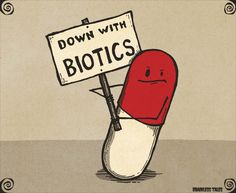
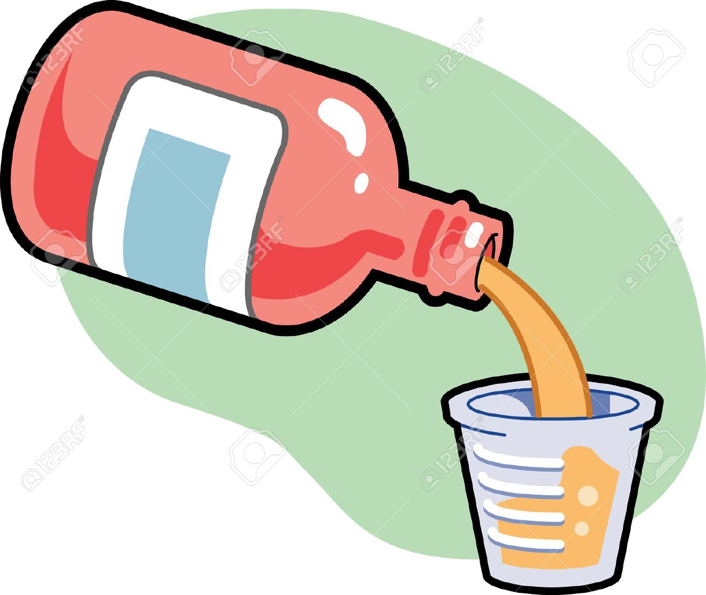

There are many medications for kids with CF. It includes pancreatic enzyme supplements, multivitamins. Other medications for kids include:
We will cover enzymes in another page. So lets learn about medications
This medicine is even named after mucus. It is called MUCO-luytics.
Mucus build up heppens in the body of kids with cystic fibrosis. To keep this under control, mucolytics medications are used
Mucolytics are medicines that make the mucus (sputum) less thick and easier to cough up. If this medicine is not used, mucus will make the kids sick.
Bacteria build up may happen due to mucus in the bodies of kids with cystic fibrosis.
To figth bacteria, antibiotics can be used after your doctor says that it is ok.
There may be small side-effects(problems) when you start using antibiotics
Antibiotics should be used as less as possible as there effectiveness reduces if you use too much.
Bronchodilators can widen airways by helping the muscles relax. This could allow more air to travel through the airways.
This will also help other medications work more effectively for kids with cystic fibrosis
There are broncodilators that work for a long time and ones that work for a short amount of time.
Anti-inflammatory medicines help if any kids feel any pain. These medicines will be chosen specally for the child.
This type of medicine is used for short term effects usually
Overuse of this medicine can cause serious problems to the child
CFTR potentiators help to correct problems in the bodies of children with CF.